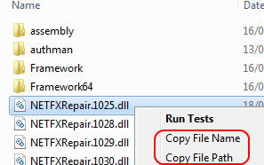
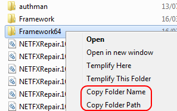

Copy Path
Copy the Path/Name of a File/Folder using right-click
Project maintained by sother Hosted on GitHub Pages — Theme by mattgraham
What is Copy Path?
A Windows Explorer extension that adds:
- Copy File Path and Copy File Name commands to the right-click file action;
- Copy Folder Path and Copy Folder Name commands to the right-click folder action.
 
How to install?
Just download the installer, run it and you're done!
Copyright
Author: Luciano Sother
THE SOFTWARE IS PROVIDED "AS IS", WITHOUT WARRANTY OF ANY KIND, EXPRESS OR IMPLIED, INCLUDING BUT NOT LIMITED TO THE WARRANTIES OF MERCHANTABILITY, FITNESS FOR A PARTICULAR PURPOSE AND NONINFRINGEMENT. IN NO EVENT SHALL THE AUTHORS OR COPYRIGHT HOLDERS BE LIABLE FOR ANY CLAIM, DAMAGES OR OTHER LIABILITY, WHETHER IN AN ACTION OF CONTRACT, TORT OR OTHERWISE, ARISING FROM, OUT OF OR IN CONNECTION WITH THE SOFTWARE OR THE USE OR OTHER DEALINGS IN THE SOFTWARE.

This work is licensed under a Creative Commons Attribution 3.0 Unported License.